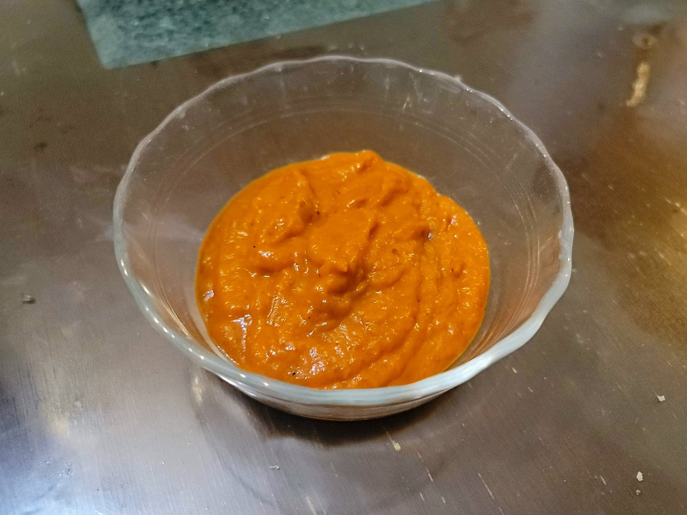

Ajvar

Ingredients:
- 4 Red bell peppers or Red peppers
- Optional: 1 small-medium Eggplant
- 2 cloves Garlic
- 1/3 cup Olive oil
- 2 tsp White vinegar
- Salt, to taste
- Black pepper, to taste
Instructions:
- Preheat an oven to 475 degrees Fahrenheit.
- Place the bell peppers and eggplant onto a baking sheet and let roast in the oven until blackened, about 30 minutes, flipping occasionally to evenly blacken each side.
- Once blackened, transfer the bell peppers and eggplant to an airtight glass container. Cover and let steam for about 20 minutes.
- Peel the blackened surface of the skin from the bell peppers and eggplant. Core and deseed the bell peppers and slice the eggplant in half. Transfer the flesh of the eggplant and bell peppers to a food processor along with the rest of the ingredients. Pulse until smooth.
- Transfer to a saucepan and bring to a simmer. Simmer, stirring constantly, until thickened, about 30 minutes.
- Taste and adjust salt and pepper as needed. Serve immediately with bread and/or cevapi or transfer to a jar and place into the fridge.